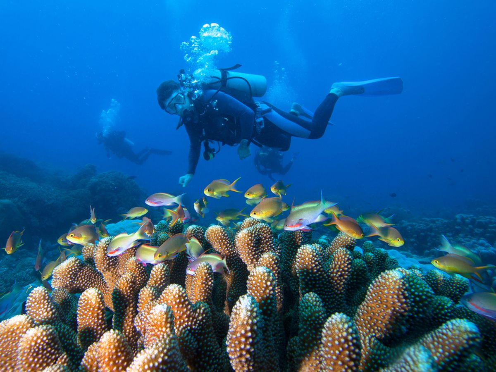
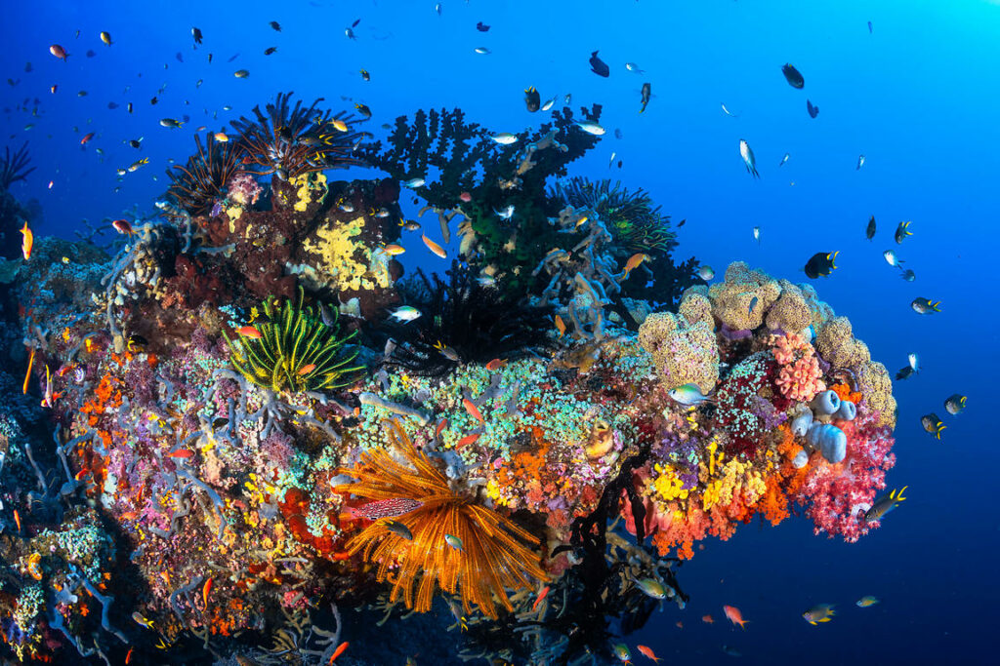
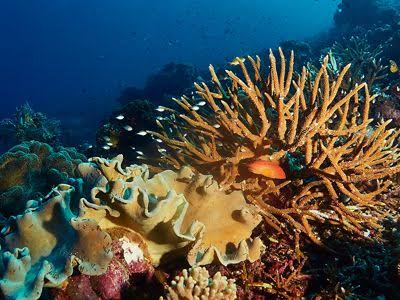

Segitiga Terumbu Karang

Segitiga Terumbu Karang

Segitiga Terumbu Karang
Raja Ampat merupakan salah satu destinasi wisata di Indonesia yang terkenal karena keindahan alamnya. Raja Ampat terletak di Provinsi Papua Barat Daya dan terdiri dari banyak pulau yang dikelilingi oleh laut. Ketika melihat foto Raja Ampat, hal yang paling menarik perhatian adalah lautnya yang berwarna biru jernih dan pulau-pulau hijau yang terlihat masih alami. Pemandangan tersebut membuat Raja Ampat terlihat seperti tempat yang jauh dari kehidupan kota yang ramai. Menurut saya, hal ini menjadi salah satu alasan mengapa Raja Ampat menarik untuk dikunjungi. Di Jakarta, kita lebih sering melihat gedung, kendaraan, dan jalan yang dipenuhi orang. Sementara itu, Raja Ampat menawarkan pemandangan alam yang sangat berbeda.
Selain pemandangan di atas laut, Raja Ampat juga terkenal dengan kehidupan bawah lautnya. Raja Ampat merupakan bagian dari Coral Triangle atau Segitiga Terumbu Karang, yaitu kawasan laut yang memiliki keanekaragaman hayati laut yang sangat tinggi. Kawasan ini menjadi tempat hidup bagi berbagai jenis ikan dan terumbu karang. Raja Ampat sendiri memiliki ratusan jenis karang, sehingga daerah ini menjadi salah satu tempat penting bagi ekosistem laut. Karena itu, wisatawan yang datang ke Raja Ampat tidak hanya dapat menikmati pemandangan dari daratan, tetapi juga dapat melihat kehidupan bawah laut melalui kegiatan seperti snorkeling dan menyelam. Berbagai jenis ikan dan terumbu karang dapat ditemukan di perairannya, sehingga pengalaman melihatnya secara langsung tentu akan berbeda dengan hanya melihatnya melalui foto atau video.
Walaupun memiliki keindahan yang luar biasa, kondisi terumbu karang di kawasan Coral Triangle tetap perlu diperhatikan. Terumbu karang menghadapi berbagai ancaman, seperti pencemaran, kegiatan manusia yang merusak, dan perubahan kondisi laut. Jika terumbu karang mengalami kerusakan, kehidupan laut yang bergantung pada ekosistem tersebut juga dapat ikut terdampak. Hal ini membuat saya berpikir bahwa keindahan Raja Ampat sebenarnya tidak hanya tentang pemandangan yang bagus untuk difoto. Ada ekosistem yang sangat penting di balik pemandangan tersebut dan harus dijaga. Menurut saya, justru hal ini membuat Raja Ampat menjadi tempat wisata yang menarik untuk dipelajari, karena kita bisa melihat bagaimana keindahan alam dan kehidupan manusia saling berhubungan.
Selain snorkeling dan menyelam, wisatawan dapat melakukan berbagai kegiatan lain di Raja Ampat. Salah satunya adalah berkeliling menggunakan perahu untuk melihat pulau-pulau dari laut. Pemandangan gugusan pulau dari atas perahu menjadi salah satu pengalaman yang menarik karena kita dapat melihat luasnya wilayah Raja Ampat. Wisatawan juga dapat mengunjungi tempat-tempat yang menawarkan pemandangan dari ketinggian. Dari sana, bentuk pulau-pulau kecil dan laut di sekitarnya dapat terlihat dengan lebih jelas. Selain menikmati alam, wisatawan juga dapat mengenal kehidupan masyarakat setempat. Menurut saya, ketika mengunjungi suatu daerah, kita tidak hanya perlu menghargai tempat wisatanya, tetapi juga menghormati masyarakat dan kebiasaan yang ada di daerah tersebut.